plot( mtcars$disp, mtcars$mpg )
lw <- loess( mpg ~ disp, data = mtcars )
points(mtcars$disp, lw$fitted, col = 'tomato', lwd = 2)
legend('topright', c('Observado','Ajustado'),fill=c(1,'tomato'), bty='n')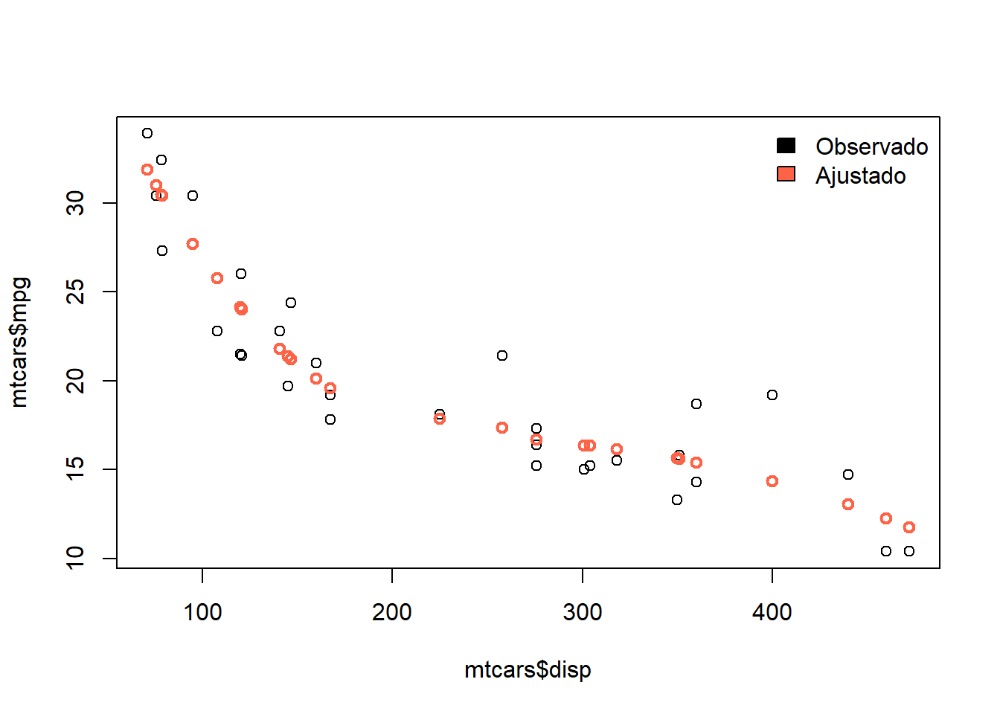
loessLoes é um modelo de regressão não linear não paramétrico. Abaixo mostramos como utilizá-lo considerando um banco de dados com diversas marcas de veículos e a relação entre a variável milhas por galão (mpg) e deslocamento (disp)
plot( mtcars$disp, mtcars$mpg )
lw <- loess( mpg ~ disp, data = mtcars )
points(mtcars$disp, lw$fitted, col = 'tomato', lwd = 2)
legend('topright', c('Observado','Ajustado'),fill=c(1,'tomato'), bty='n')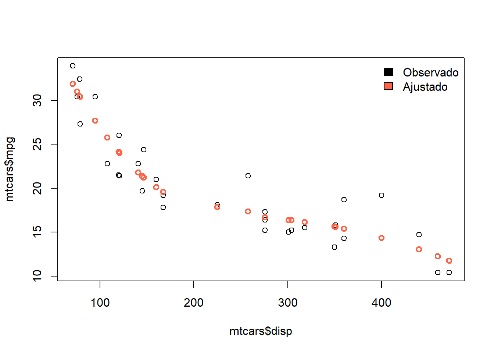
Podemos estimar a tendência utilizando o loess, imaginando uma regressão do tipo:
\[E(X_t)=g(t),\] ou seja, utilizando o tempo como regressora. Vamos ilustrar a ideia utilizando a série de acidentes aéreos mensais da FAB.
# criando a variável regressora
tempo <- 1 : length(fab_mes)
# aplicando o loess
lw <- loess( fab_mes ~ tempo)
# transformando o valor predito em uma série temporal
fit <- ts(lw$fitted, start = start(fab_mes), frequency = frequency(fab_mes) )
# gráfico da tendência estimada
ts.plot( fab_mes, ylab = 'No. acidentes/mês' , lwd = 2)
lines(fit, lwd = 2, col = 'tomato')
legend('bottomright', c('Observado','Ajustado'),fill=c(1,'tomato'), bty='n')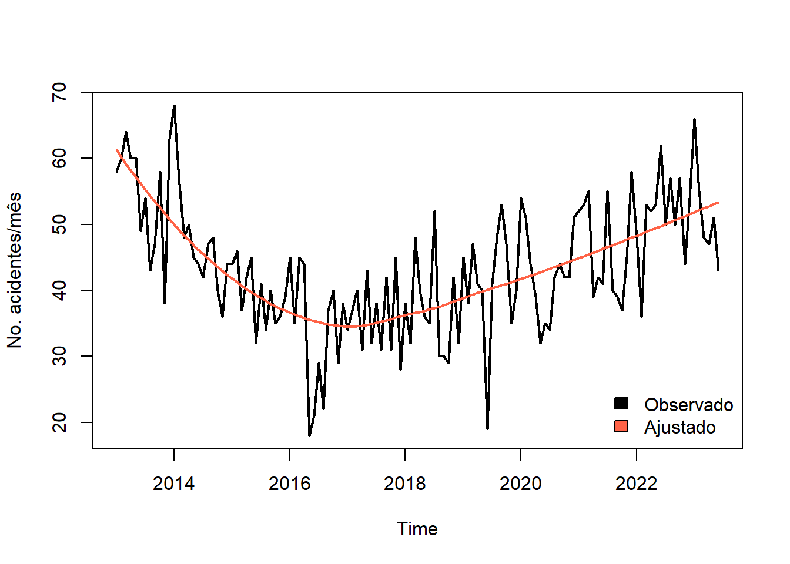
Acima estimamos a tendência. Denomine este sinal estimado por \(\hat{g}(t)\). Agora, considere a série
\[y_t=x_t-\hat{g}(t).\] Ao analisar esta série, duas coisas podem acontecer:
Vamos encontrar um comportamento semelhante a um ruído (correlograma com barras praticamente nulas)
Vamos encontrar algum outro sinal ainda não ajustado.
Os gráficos abaixo mostram que não há mais sinais para procurar
yt <- fab_mes - fit
ts.plot(yt)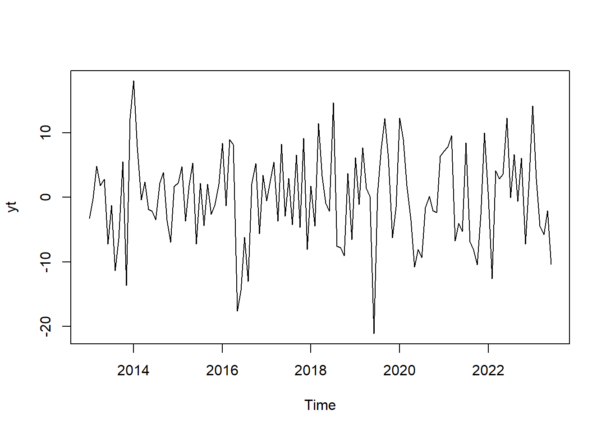
acf(yt, lag = 30)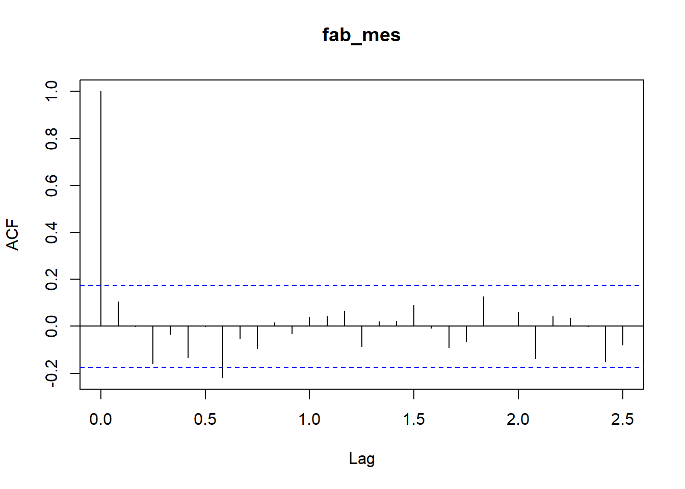
Portanto, esta série pode ser escrita como
\[x_t = \hbox{tendência}_t+\varepsilon_t,\] onde \(\varepsilon_t\) é um ruído branco.
Abaixo, vamos analisar a série de taxa de desemprego mensal, entre março de 2002 e dezembro de 2015.
url <- 'https://www.dropbox.com/s/rmgymzsic99qawd/desemprego.csv?dl=1'
banco <- fread(url)
desemprego<- ts( banco[,'V2',], start = c(2002,3), frequency=12)
ts.plot(desemprego, ylab = 'Taxa de desemprego')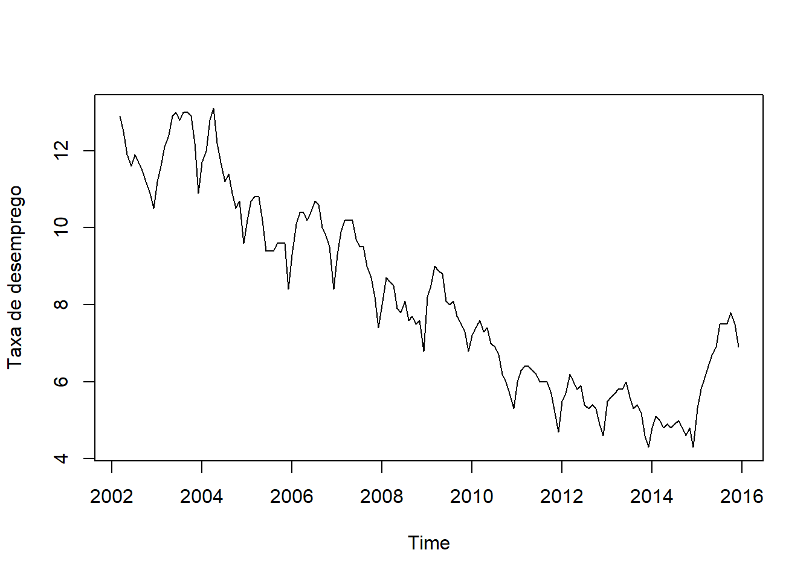
acf(desemprego, lag = 30)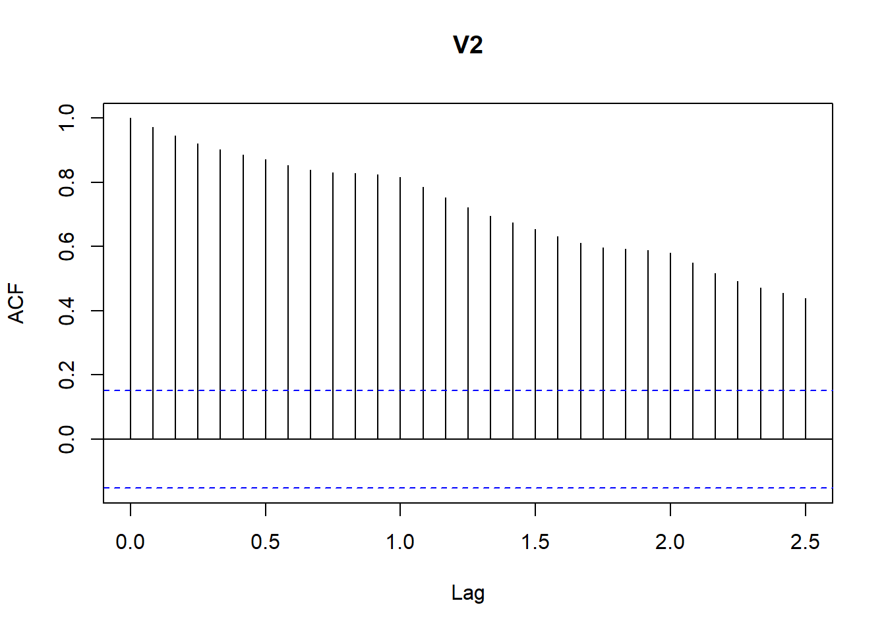
É possível verificar que há tendência e sazonalidade na série. Vamos estimar a componente de tendência primeiro.
# criando a variável regressora
tempo <- 1 : length(desemprego)
# aplicando o loess
lw <- loess( desemprego ~ tempo)
# transformando o valor predito em uma série temporal
fit <- ts(lw$fitted, start = start(desemprego), frequency = frequency(desemprego) )
# gráfico da tendência estimada
ts.plot( desemprego, ylab = 'Taxa de desemprego' , lwd = 2)
lines(fit, lwd = 2, col = 'tomato')
legend('topright', c('Observado','Ajustado'),fill=c(1,'tomato'), bty='n')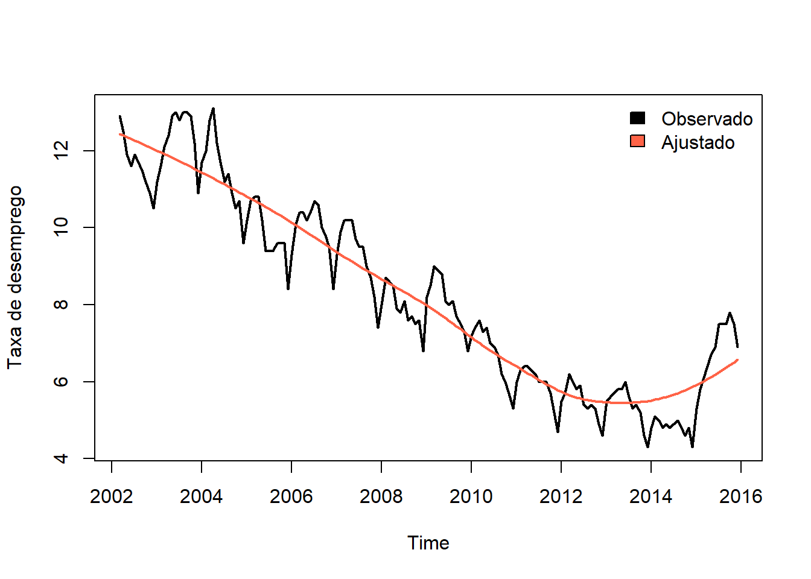
Vamos eliminar a tendência estiamada e avaliar o restante.
yt <- desemprego - fit
ts.plot(yt)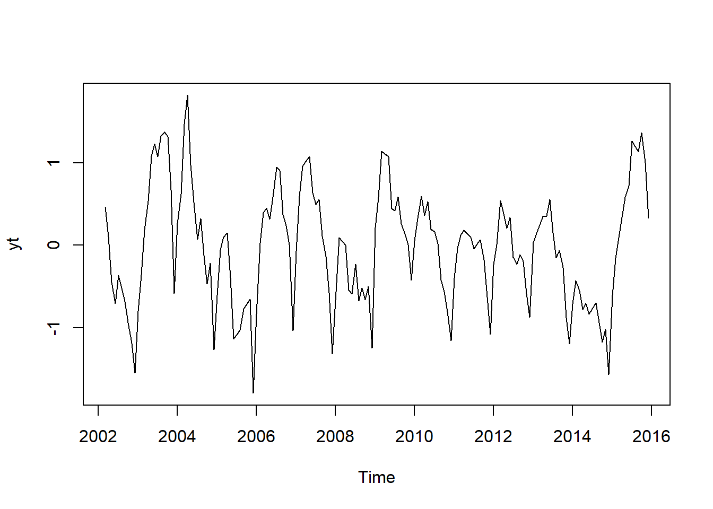
acf(yt, lag = 50)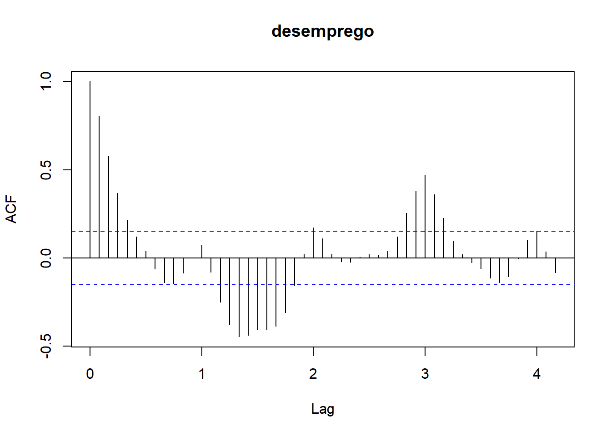
Fica claro o comportamento sazonal. Note que o período não parece ser anual, mas sim de 3 em 3 anos. Vamos avaliar esse aspecto com mais detalhes na próxima seção.
Exercício 1 Considerando o banco de dados sobre suicídios no Mato Grosso do Sul:
Estime a tendência
Remova a tendência estimada e verifique se o resultado é um ruído branco
Exercício 2 Verifique se há tendência na série ldeaths.
Exercício 3 Verifique se há tendência na série de óbitos maternos, cuja url é
url <- 'https://drive.google.com/uc?authuser=0&id=1tYFFT9L2iopKmBDUI3P8qNIRaOnMYj7d&export=download'Faça duas análises, uma com a série inteira e outra eliminando os dados a partir de 2020.
Exercício 4. O banco de dados abaixo apresenta algumas séries temporais mensais com o número de nascidos vivos em Manaus
url <- 'https://drive.google.com/uc?authuser=0&id=139h6x2g7PkAHNTzsbQKUl5G2MqoXYk6Y&export=download'Estime a tendência dos nascimentos considerando duas séries: partos vaginais e cesários. Coloque as duas informações no mesmo gráfico.
Elimine a tendência de cada série e verifique se há outro sinal a ser estimado.
Exercício 1
Todo padrão sazonal possui um período - a quantidade de tempo necessária para que o padrão se repita. O inverso desse período é denominado frequência fundamental, que é a fração de um ciclo por unidade de tempo.
Exemplo: Considere o período de 12 meses. Então, a frequência fundamental é 1/12 (ou seja, cada mês representa um doze ávos do período de 1 ano).
Lembremos que o sinal harmônico é igual a \[\hbox{sinal}(t)=A\sin\left(2\pi\omega t+\phi\right),\] onde \(\omega=1/p\) é a frequência. Com um pouco de trigonometria, podemos mostrar que
\[\hbox{sinal}(t)=\beta_1\cos\left(2\pi\omega t\right)+ \beta_2\sin\left(2\pi\omega t\right)\] onde \(\beta_1=A\cos(\phi)\) e \(\beta_2=-A\sin(\phi)\). É possível mostrar também que \(A=\sqrt{\beta_1+\beta_2}\) e \(\phi=\cos^{-1}(\beta_1/A)\). A vantagem dessa nova forma é que o sinal pode ser escrito como um modelo linear e pode ser estimado facilmente. A soma de quadrados explicada pela regressão é proporcional à
\[I(\omega)=\hat{A}(\omega)^2 \] e podemos mostrar que a estimativa de máxima verossimilhança para \(\omega\) é o valor que maximiza \(I(\omega)\).
Periodograma O gráfico de \(I(\omega)\) é denominado periodograma.
Vamos criar a função periodograma
Iw <- function(y,w){
# matriz de planetamento
n <- length(y)
t <- 1:n
x <- cbind(cos(2*pi*w*t), sin(2*pi*w*t))
# coeficientes do modelo linear
beta <- coefficients(lm(y ~x-1))
# amplitude
A <- sqrt(sum(beta^2))
# Iw
.5*n*A^2
}
periodograma <- function(y){
# gráfico
n <- length(y)
w_detec <- ( 1 : floor( (n-1)/ 2) ) / n
I_w <- sapply( w_detec, function(w) Iw(y , w) )
plot( 1 / w_detec , I_w, xlab = 'Período', ylab = expression(I(w)), type = 'h' , lwd = 2)
# encontrando o periodo
fund <- w_detec[ which( I_w == max(I_w))]
cat('Período: ',1/fund,'\n')
}Na função acima y é a série temporal. Vamos aplicar essa função para a série de temperaturas no Castelo de Nottingham.
periodograma(nottem)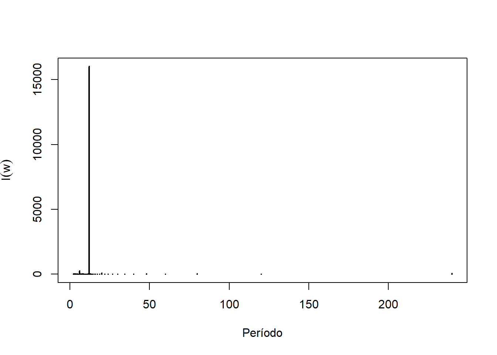
Período: 12 É importante notar que a frequência fundamental é um pico expressivo em relação aos demais. Abaixo mostramos o periodograma para uma amostra aleatória - note como há vários picos, evidenciando a falta de uma frequência fundamental.
periodograma(rnorm(100))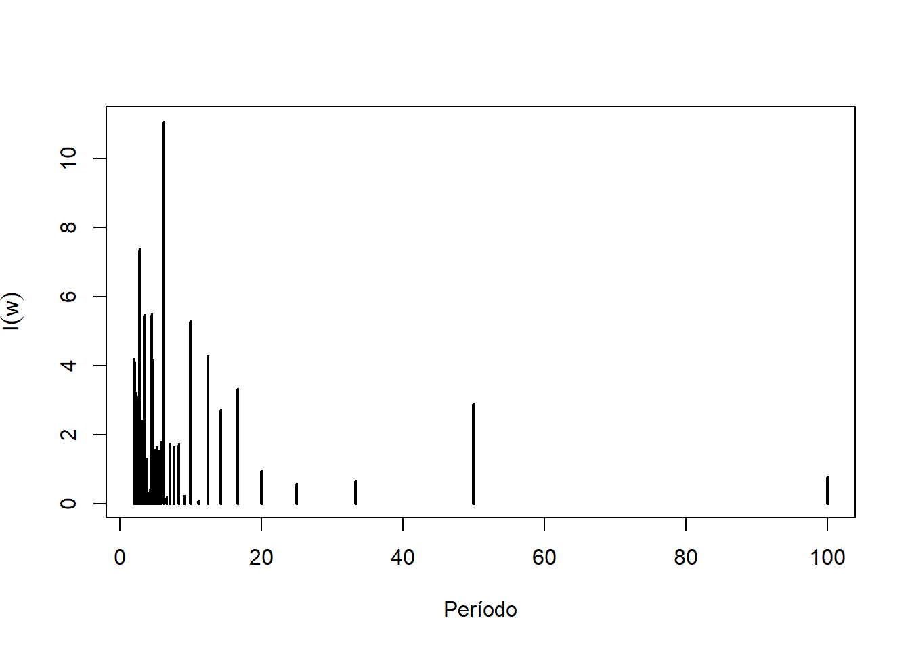
Período: 6.25 É importante remover a tendência antes de aplicar o periodo. Por exemplo, considere novamente a série AirPassengers
ts.plot(AirPassengers)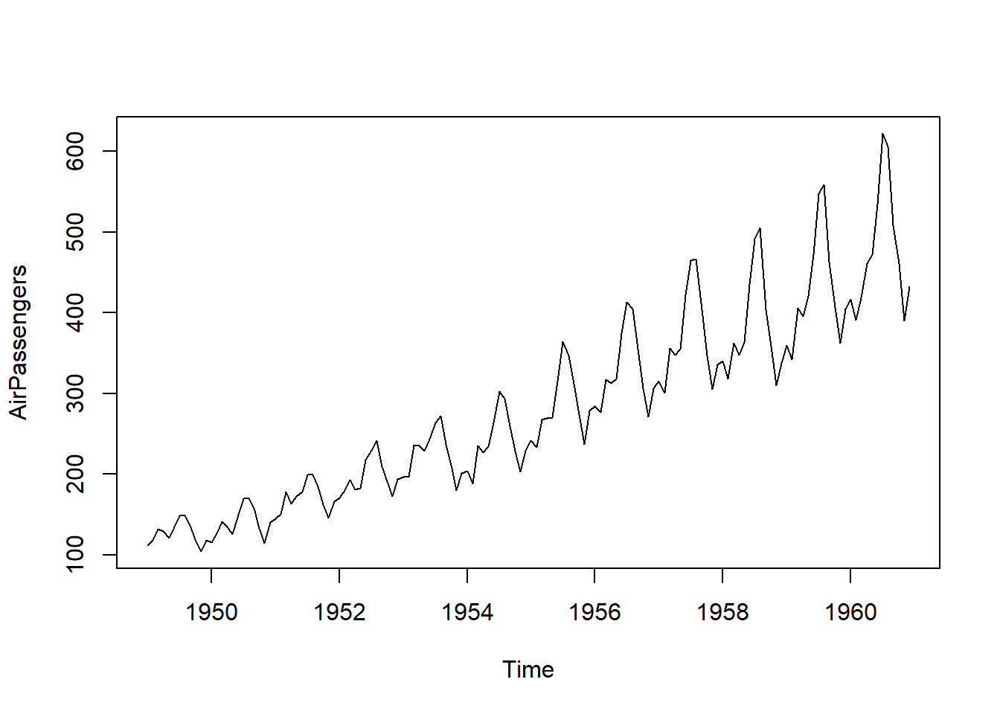
periodograma(AirPassengers)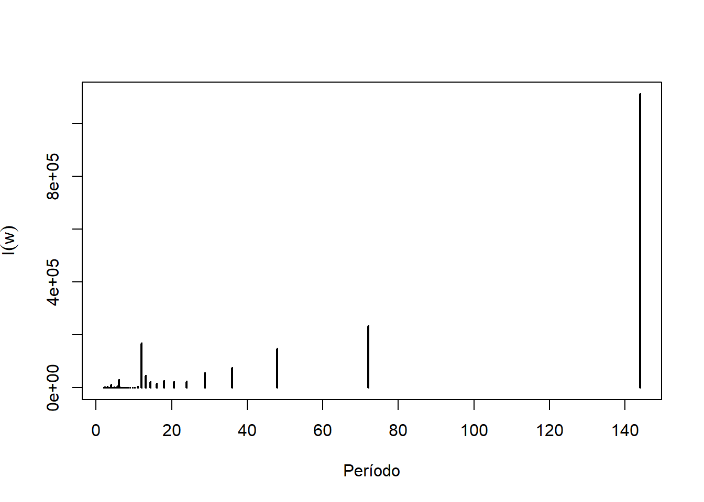
Período: 144 Embor exista uma sazonalidade clara, o periodograma retorna um período de 12 anos, algo irreal. Vamos remover a tendência.
# criando o loess
y <- AirPassengers
tempo <- 1:length(y)
lw <- loess( y ~ tempo )
fit <- lw$fitted
# criando a série livre de tendência
y_detrend <- ts( y-fit, start = start(y), frequency = frequency(y))
ts.plot( y_detrend )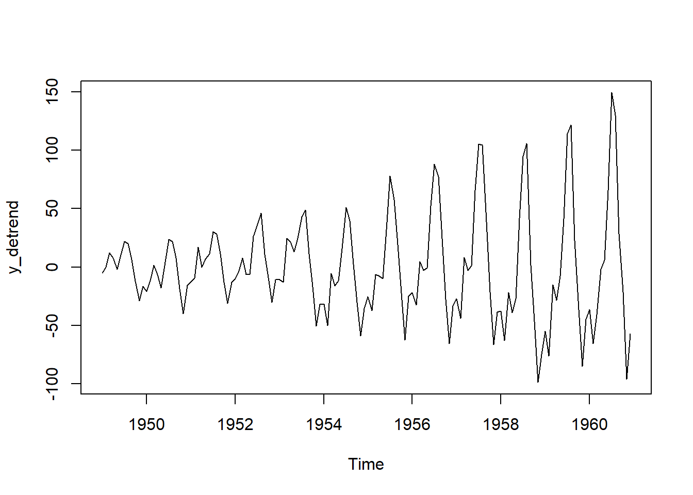
periodograma( y_detrend )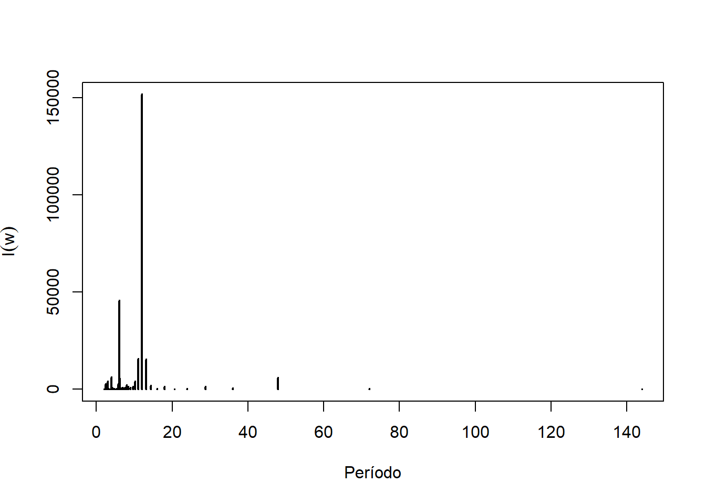
Período: 12 Exercício 1. Determine o período da série ldeaths - número de óbito mensais por doenças pulmonares no Reino Unido.
Exercício 2. Determine o período da série de óbitos maternos, cuja url é:
url <- 'https://drive.google.com/uc?authuser=0&id=1tYFFT9L2iopKmBDUI3P8qNIRaOnMYj7d&export=download'Exercício 3. A série co2 representa a concentração de CO\(_2\) na atmosfera medida em Mauna Loa. Analise a tendência da série e estime o período.
Exercício 4. Determine a tendência e o período da série mensal do número de nascidos vivos em Manaus, independente do tipo de parto.
Considere novamente o harmônico
\[\hbox{sinal}(t)=A\cos\left(\frac{2\pi}{p}t+\phi\right)\]
O sinal no tempo \(t=1+p\) é equivalente ao sinal no tempo 1:
\[\hbox{sinal}(1+p)=A\cos\left(\frac{2\pi}{p}+2\pi+\phi\right)=A\cos\left(\frac{2\pi}{p}+\phi\right)=\hbox{sinal}(1)\]
Isso é verdade para todo \(t=1+kp\), onde \(k=1,2,\ldots.\) Isto implica que, na prática, a imagem de \(\hbox{sinal}(t)\) só pode ser \(p\) valores:
\[\hbox{sinal}(t)=\left\{\begin{array}{ll}\hbox{sinal}(1),&t=1,1+p,1+2p,\ldots,\\ \hbox{sinal}(2),&t=2,2+p,2+2p\ldots,\\ \vdots,&\vdots\\ \hbox{sinal}(p),&t=p,2p,3p\ldots,\end{array}\right.\]
Então \[x_t=\hbox{sinal}(t)+\varepsilon_t\] pode ser considerado uma ANOVA com um fator.
Considere a série ldeths, que já sabemos ter uma leve tendência decrescente e sazonalidade com período 12. Primeiro, vamos encontrar a série livre de tendência:
tempo <- 1:length(ldeaths)
lw <- loess( ldeaths ~ tempo)
tend <- lw$fitted
tend <- ts( tend, start = start(ldeaths), frequency = frequency(ldeaths))
# série sem tendência
d_ldeaths <- ldeaths - tendEm seguida, encontramos o período.
periodograma(d_ldeaths)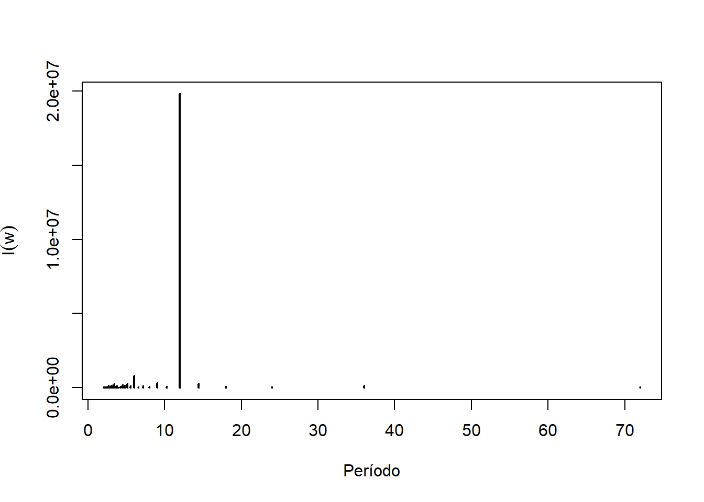
Período: 12 Nesse momento, devemos atribuir o período para o objeto ts, fazendo
d_ldeaths <- ts( d_ldeaths, frequency= 12) Note que o código acima foi inócuo porque o objeto ldeaths já tinha o período 12.
Antes de fazer o ajuste sazonal, é possível fazer um gráfico com doze séries temporais, uma para cada fator sazonal (no nosso exemplo, uma série só de janeiros, de fevereiros, etc). Mostramos isso a seguir:
monthplot(d_ldeaths)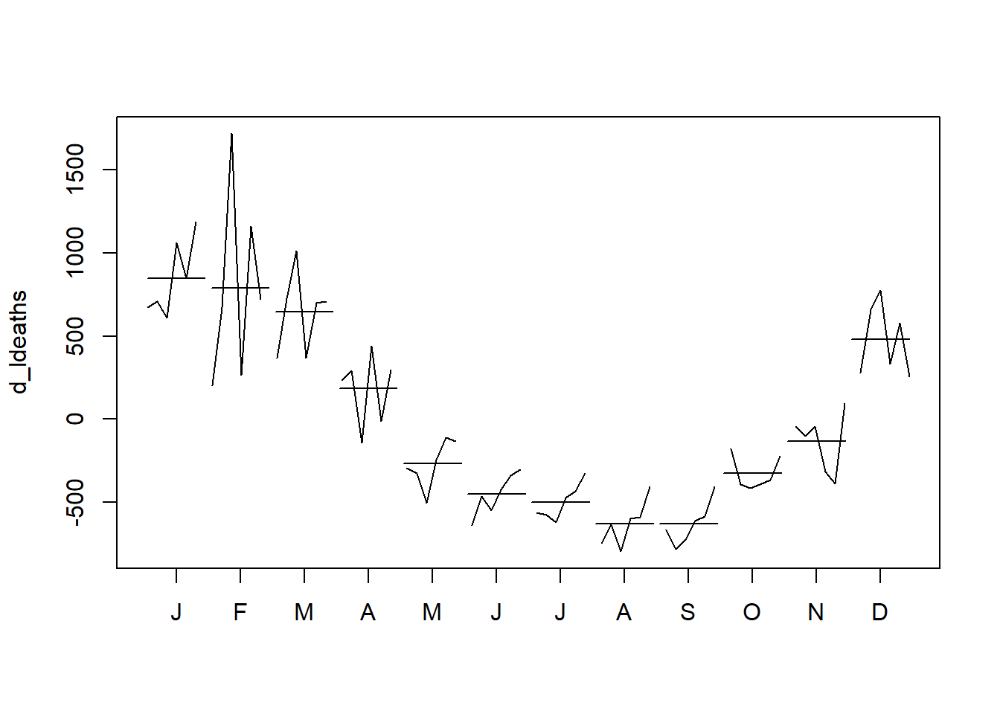
No gráfico acima, a linha horizontal em cada mês representa a média.
Agora, vamos estimar os 12 fatores sazonais. Para isso, vamos utilizar a função cycle, que mostra a posição de cada observação dentro do ciclo sazonal. Eis um exemplo de seu funcionamento:
head(cycle(d_ldeaths), 14) Jan Feb Mar Apr May Jun Jul Aug Sep Oct Nov Dec
1 1 2 3 4 5 6 7 8 9 10 11 12
2 1 2 Vamos transformar o resultado do cycle em um fator e ajustar uma ANOVA:
ciclo <- as.factor(cycle(d_ldeaths))
mod <- lm( d_ldeaths ~ciclo-1)
plot(coefficients(mod))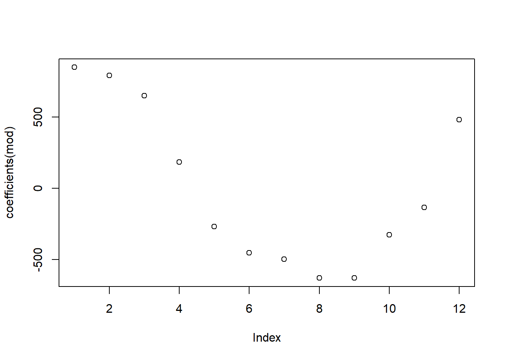
Por último, vamos dessazonalizar a série:
saz_fit <- mod$fitted.values
residuo <- d_ldeaths - saz_fit
plot(residuo)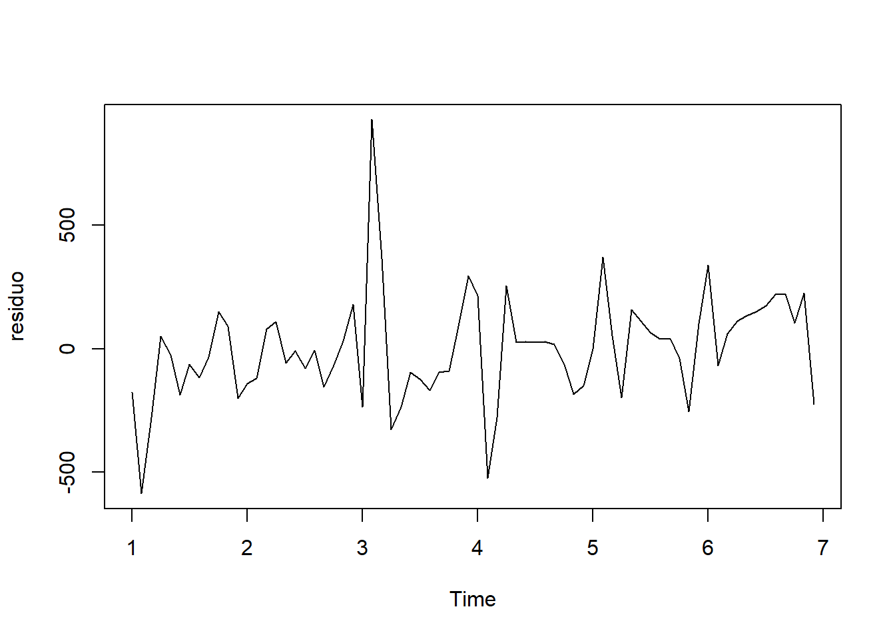
acf(residuo, lag = 30)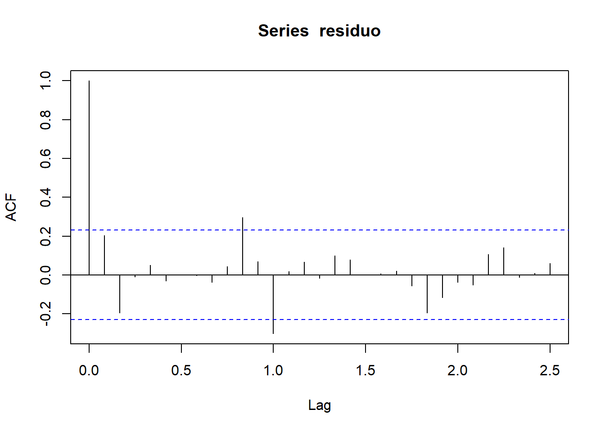